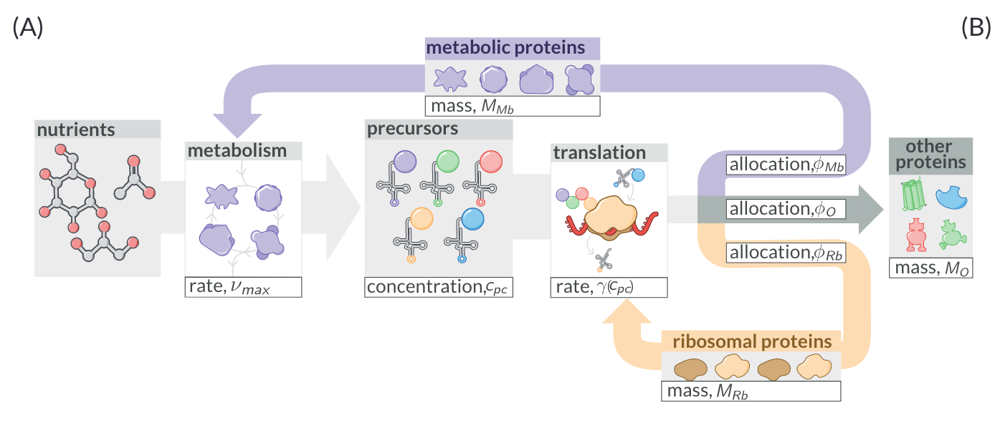

Lesson 1: Example Notebook Without Code
This is an example notebook that has only markdown text. It is written as a Jupyter notebook, but with no real code cells. This is useful if you only need to put together prose without plots or computations. You can still put in images using the normal markdown syntax, but they must reference images within the data subdirectory. For example, the following markdown

shows this image:
You can use inline mathematics typeset in LaTeX using single dollar signs $ f(x) $ which yields: \(f(x)\). Wrapping it in double dollar signs $$ yields a linebreak with an equation
To have an equation numbered, you must include a \tag{NUMBER} along with the equation. For example, the following markdown
$$
\int\limits_{-\inf}^{+\inf} e^{-a(x + b)^2} dx = \sqrt{\frac{\pi}{a}}. \tag{1}
$$
produces $$ \int\limits_{-\inf}^{+:nbsphinx-math:inf} e^{-a(x + b)^2} dx = \sqrt{\frac{\pi}{a}}. \tag{1}
$$
Add licensing!
Always add licensing information to your notebooks. Typically, you can include a footer [or a header (or both!)] that has the links to the appropriate licensing. For example, consider adding the following:
---
All creative work is licensed under a Creative Commons [CC-BY 4.0](https://creativecommons.org/licenses/by/4.0/) license. All
code herein is released under a standard [MIT license](https://choosealicense.com/licenses/mit/).